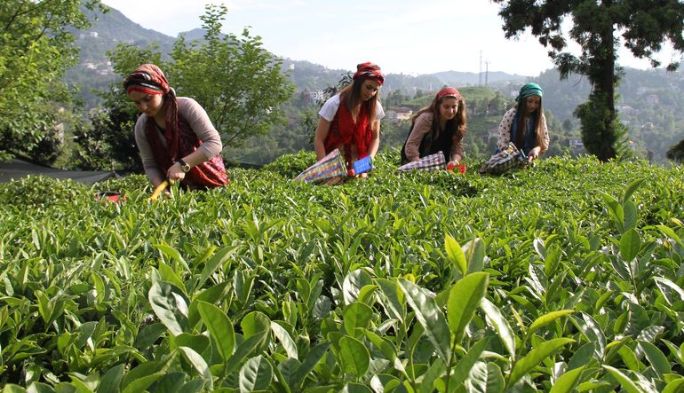
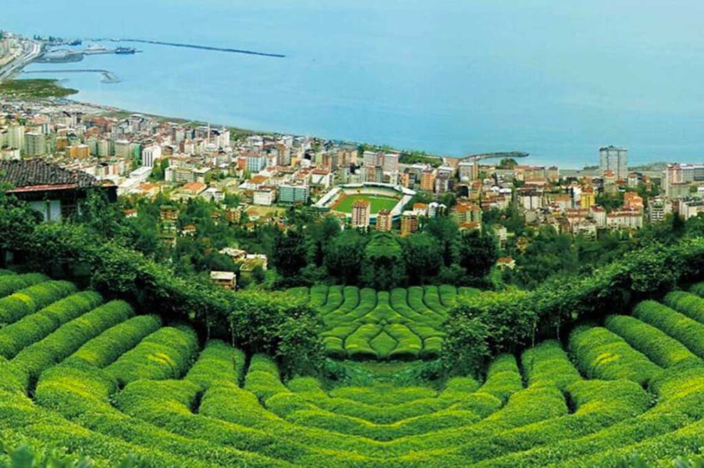

الصفحه الرئيسيه
التسميه
تاريخه
قصة الشاي
< href="teaintheworld.html"_blank">الشاي في العالم
فوائد الشاي
طرق أعداد الشاي
أصح وأفضل طريقه لاعداد الشاي
أنواع الشاي
صور مزارع الشاي
صور عن مزارع الشاي
سلة حمراء من أوراق الشاي في مزرعة الشاي الأخضر في كوالالمبور، ماليزيا، آسيا، آسيا الخلفية

بالصور... ريزا مدينة الشاي في تركيا

مزارع الشاي في ريزا - Limitless Holiday
أكبر 10 دول منتجة للشاي في العالم